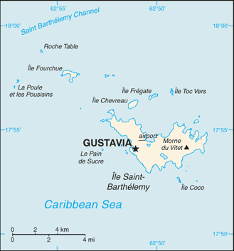
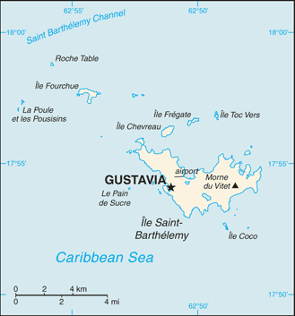

Central America and Caribbean :: SAINT BARTHELEMY
Introduction :: SAINT BARTHELEMY
-
Discovered in 1493 by Christopher COLUMBUS who named it for his brother Bartolomeo, Saint Barthelemy was first settled by the French in 1648. In 1784, the French sold the island to Sweden, which renamed the largest town Gustavia, after the Swedish King GUSTAV III, and made it a free port; the island prospered as a trade and supply center during the colonial wars of the 18th century. France repurchased the island in 1877 and took control the following year. It was placed under the administration of Guadeloupe. Saint Barthelemy retained its free port status along with various Swedish appellations such as Swedish street and town names, and the three-crown symbol on the coat of arms. In 2003, the islanders voted to secede from Guadeloupe, and in 2007, the island became a French overseas collectivity. In 2012, it became an overseas territory of the EU, allowing it to exert local control over the permanent and temporary immigration of foreign workers including non-French European citizens.
Geography :: SAINT BARTHELEMY
-
Caribbean, island between the Caribbean Sea and the North Atlantic Ocean; located in the Leeward Islands (northern) group; Saint Barthelemy lies east of the US Virgin Islands17 90 N, 62 85 WCentral America and the Caribbeantotal: 25 sq kmland: 25 sq kmwater: negligiblecountry comparison to the world: 240less than one-eighth the size of Washington, DC0 kmtropical, with practically no variation in temperature; has two seasons (dry and humid)hilly, almost completely surrounded by shallow-water reefs, with plentiful beachesmean elevation: NAelevation extremes: lowest point: Caribbean Ocean 0 mhighest point: Morne du Vitet 286 mfew natural resources; beaches foster tourismmost of the populace concentrated in and around the capital of Gustavia, but scattered settlements exist around the island peripherywith no natural rivers or streams, fresh water is in short supply, especially in summer, and provided by desalination of sea water, collection of rain water, or imported via water tankera 1,200-hectare marine nature reserve, the Reserve Naturelle, is made up of five zones around the island that form a network to protect the island's coral reefs, seagrass, and endangered marine species
People and Society :: SAINT BARTHELEMY
-
7,184 (July 2017 est.)country comparison to the world: 226white, Creole (mulatto), black, Guadeloupe Mestizo (French-East Asia)French (primary), EnglishRoman Catholic, Protestant, Jehovah's Witnesses0-14 years: 16.41% (male 606/female 573)15-24 years: 7.24% (male 274/female 246)25-54 years: 43.78% (male 1,708/female 1,437)55-64 years: 15.83% (male 618/female 519)65 years and over: 16.75% (male 602/female 601) (2017 est.)total: 44.1 yearsmale: 44.1 yearsfemale: 44.2 years (2017 est.)country comparison to the world: 14most of the populace concentrated in and around the capital of Gustavia, but scattered settlements exist around the island peripheryat birth: 1.06 male(s)/female0-14 years: 1.06 male(s)/female15-24 years: 1.1 male(s)/female25-54 years: 1.19 male(s)/female55-64 years: 1.19 male(s)/female65 years and over: 1 male(s)/femaletotal population: 1.13 male(s)/female (2016 est.)note: active local transmission of Zika virus by Aedes species mosquitoes has been identified in this country (as of August 2016); it poses an important risk (a large number of cases possible) among US citizens if bitten by an infective mosquito; other less common ways to get Zika are through sex, via blood transfusion, or during pregnancy, in which the pregnant woman passes Zika virus to her fetus (2016)
Government :: SAINT BARTHELEMY
-
conventional long form: Overseas Collectivity of Saint Barthelemyconventional short form: Saint Barthelemylocal long form: Collectivite d'outre mer de Saint-Barthelemylocal short form: Saint-Barthelemyabbreviation: Saint-Barth (French); St. Barts or St. Barths (English)etymology: explorer Christopher COLUMBUS named the island in honor of his brother Bartolomeo's namesake saint in 1493overseas collectivity of Francename: Gustaviageographic coordinates: 17 53 N, 62 51 Wtime difference: UTC-4 (1 hour ahead of Washington, DC, during Standard Time)none (overseas collectivity of France)Fete de la Federation, 14 July (1790); note - local holiday is St. Barthelemy Day, 24 August (1572)4 October 1958 (French Constitution)French civil lawsee France18 years of age, universalchief of state: President Emmanuel MACRON (since 14 May 2017), represented by Prefect Anne LAUBIES (since 8 June 2015)head of government: President of Territorial Council Bruno MAGRAS (since 16 July 2007)cabinet: Executive Council elected by the Territorial Council; note - there is also an advisory, economic, social, and cultural councilelections/appointments: French president directly elected by absolute majority popular vote in 2 rounds if needed for a 5-year term (eligible for a second term); prefect appointed by the French president on the advice of French Ministry of Interior; president of Territorial Council indirectly elected by its members for a 5-year term; election last held 0n 2 April 2017 (next to be held in 2022)election results: Bruno MAGRAS (SBA) reelected president; Territorial Council vote - NAdescription: unicameral Territorial Council (19 seats; members elected by absolute majority vote in the first round vote and proportional representation vote in the second round; members serve 5-year terms)elections: last held on 19 March 2017 (next to be held in 2022)election results: percent of vote by party - SBA 53.7%, United for Saint Barth 20.6%, Saint Barth Essential 18.1%, All for Saint Barth 7.7%; seats by party - SBA 14, United for Saint Barth 2, Saint Barth Essential 2, All for Saint Barth 1note: Saint Barthelemy holds 1 seat in the French Senate; election last held in September 2014 (next to be held not later than September 2017); results - percent of vote by party NA; seats by party UMP 1; Saint Barthelemy elects 1 seat to the French National Assembly shared with Saint Martin; election last held on 11 and 18 June 2017 (next to be held by June 2022); results - percent of vote by party NA; seats by party UMP 1All for Saint Barth (Tous pour Saint-Barth) [Bettina COINTRE]Saint Barth Essential (Saint-Barth Autrement) [Marie-Helene BERNIER]Saint Barth First! (Saint-Barth d'Abord!) or SBA [Bruno MAGRAS]Saint Barth United (Unis pour Saint-Barthelemy) [Xavier LEDEE]UPUnone (overseas collectivity of France)none (overseas collectivity of France)the flag of France is usedpelicanname: "L'Hymne a St. Barthelemy" (Hymn to St. Barthelemy)lyrics/music: Isabelle Massart DERAVIN/Michael VALENTInote: local anthem in use since 1999; as a collectivity of France, "La Marseillaise" is official (see France)
Economy :: SAINT BARTHELEMY
-
The economy of Saint Barthelemy is based upon high-end tourism and duty-free luxury commerce, serving visitors primarily from North America. The luxury hotels and villas host 70,000 visitors each year with another 130,000 arriving by boat. The relative isolation and high cost of living inhibits mass tourism. The construction and public sectors also enjoy significant investment in support of tourism. With limited fresh water resources, all food must be imported, as must all energy resources and most manufactured goods. The tourism sector creates a strong employment demand and attracts labor from Brazil and Portugal. The country’s currency is the euro.euros (EUR) per US dollar -0.9214 (2016 est.)0.885 (2015 est.)0.7489 (2014 est.)0.7634 2013 est.)0.7752 (2012 est.)
Communications :: SAINT BARTHELEMY
-
general assessment: fully integrated accessdomestic: direct dial capability with both fixed and wireless systemsinternational: country code - 590; undersea fiber-optic cable provides voice and data connectivity to Puerto Rico and Guadeloupe (2008)no local TV broadcasters; 3 FM radio channels (2 via repeater).bl; note - .gp, the Internet country code for Guadeloupe, and .fr, the Internet country code for France, might also be encountered
Transportation :: SAINT BARTHELEMY
-
1 (2013)country comparison to the world: 231total: 1under 914 m: 1 (2017)major seaport(s): Gustavianearest airport for international flights is Princess Juliana International Airport (SXM) located on Sint Maarten
Military and Security :: SAINT BARTHELEMY
-
defense is the responsibility of France